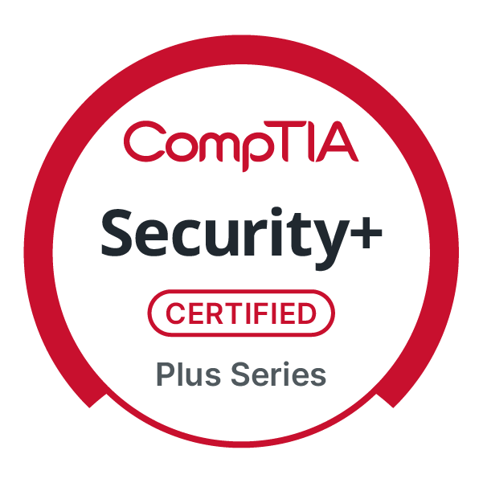

AskPV
A collaborative technology project focused on improving access to useful guidance and information for the Prairie View community.
View RepositoryCybersecurity is the foundation of my technical work. I am especially interested in protecting systems, identifying vulnerabilities, monitoring for potential threats, and building solutions that are both secure and practical.
My projects also allow me to explore software development, artificial intelligence, robotics, cloud technology, research, and other areas where security and innovation intersect. Each project represents an opportunity to strengthen my technical skills, solve an important problem, and better understand how technology can be used to protect and support people.

A professional milestone supporting my continued development in cybersecurity and secure systems.
These cards will grow as verified project details, contributions, technologies, and status information are added.
A collaborative technology project focused on improving access to useful guidance and information for the Prairie View community.
View RepositoryVerified project details are being prepared.
View RepositoryA file-integrity and change-monitoring project currently in development for clearer local activity logs.
Visit my GitHub to see additional repositories, coursework, experiments, and projects as they continue to develop.